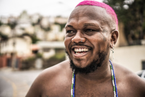

Djonga
Gustavo Pereira Marques (Belo Horizonte, 4 de junho de 1994), mais conhecido pelo nome artístico Djonga, é um rapper, escritor e compositor brasileiro. Considerado um dos nomes mais influentes do rap na atualidade, o artista chama a atenção por sua lírica afiada, marginalizada e agressiva e por fortes críticas sociais nas letras de suas canções.
Biografia do homi
Nascido na Favela do Índio, em Belo Horizonte, Djonga foi criado nas ruas dos bairros São Lucas e Santa Efigênia, na Região Leste da capital mineira. É filho de Ronaldo Marques e Rosângela Pereira Marques. Sua avó Maria Eni Viana é tida como uma grande referência em sua vida.
Com grande influência da família, Djonga tomou gosto por música desde cedo, tendo crescido ouvindo diversos estilos musicais e artistas — de Milton Nascimento aos Racionais MCs, de Cartola à Mariah Carey. Com o tempo, foi tomando suas predileções musicais — principalmente por funk e rap — e se inspirando na obra de Cazuza, Janis Joplin, Elis Regina, Elza Soares, Jimi Hendrix, MC Smith e, sobretudo, Mano Brown.
Chegou a cursar história na Universidade Federal de Ouro Preto até o sétimo período, ficando próximo de se formar. No entanto, começou a fazer sucesso como rapper e decidiu seguir a carreira, abandonando a faculdade.
2012-2016: Início e Corpo Fechado
Começou a carreira num sarau de poesia, chamado Sarau Vira-Lata. No começo, por volta de 2012, quando estava se formando no Ensino Médio, frequentava saraus apenas para ouvir. Foi neste momento que se interessou por fazer poesia. Em seguida, o rapper Hot Apocalypse o convidou pra montar um grupo. Começou, também, a frequentar o estúdio de Chuck, conhecido como Oculto Beats, o qual produziu uma beat que Djonga musicou com uma poesia que escrevera antes, fazendo surgir "Corpo Fechado", seu primeiro single.
Depois de um tempo produziu, junto com o Coyote Beats, um disco chamado “Fechando o Corpo”, com sete faixas. Após o lançamento do EP djonga começou a ser mais reconhecido fora e com isso recebeu uma proposta de DJ Hum para gravar e juntos fizeram a faixa Um Bom Maluco. Com o lançamento, Djonga, aos poucos, foi conquistando espaço na nova cena do rap.
Em 2016, Djonga e Hot criaram o grupo DV Tribo e convocaram os mineiros FBC, Clara Lima, Oreia e Coyote Beats para participar. O grupo conseguiu notoriedade após fazer uma cypher com o selo de rap underground Pirâmide Perdida. No mesmo ano, o rapper baiano Baco Exu do Blues chamou Djonga para participar da faixa “Sujismundo”.
Lançou ao lado do rapper Primata, o single "Redenção", tendo feito, após isto, novas parcerias, como a participação na música “Santana 89” da banda de stoner rock autoral, Arqueologia Siderúrgica. Participou, no final de 2016, da cypher Poetas no Topo 1, do canal Pineapple Storm TV, que reuniu MCs proeminentes, como BK, Makalister, Menestrel e Sant.
2017–18: Heresia e O Menino que queria ser Deus
No dia 13 de março de 2017,o rapper lançou seu álbum de estreia chamado "Heresia", atingindo aclamação de crítica e público. No álbum, faz fortes críticas à sociedade e traz mensagens enfatizando o empoderamento negro. O disco foi considerado o melhor do ano na lista da renomada revista Rolling Stones, e a música destaque, “O mundo é nosso”, que contou com a participação do carioca BK, concorreu ao prêmio Red Bull de melhor faixa de 2017, atingindo o sétimo lugar. Pelo notório trabalho, Djonga também foi indicado para o prêmio APCA (Associação Paulista de Críticos de Arte).
No mesmo dia, em 2018, Djonga lançou seu segundo álbum, intitulado ''O Menino queria ser Deus'', que expõe com uma liríca afiada questões acerca de sua vida pessoal, carreira, questões sociais e raciais. O álbum conta com 10 faixas e participações de rapper como Sant, Karol Conká e Hot, com produção executiva da Ceia Ent., produção de CoyoteBeats e mixagem e masterização de Arthur Luna, o álbum, em sua maioria foi gravado no estúdio Nebula Records. O álbum foi eleito o 6º melhor disco brasileiro de 2018 pela revista Rolling Stone Brasil e um dos 25 melhores álbuns brasileiros do primeiro semestre de 2018 pela Associação Paulista de Críticos de Arte.
2019-20: Ladrão e Histórias da Minha Área
Mantendo sua tradição de lançar álbuns no dia 13 de março, neste mesmo dia, no ano de 2019, Djonga lança o álbum "Ladrão". O conceito, claramente inspirado em Robin Hood, aponta a importância de valorizar suas raízes, e não se esquecer de onde veio; como o próprio Djonga disse através de suas redes, “o tipo de ladrão que busca e traz de volta pras minhas e pros meus”. "Ladrão" reafirma o compromisso do músico em ser uma referência como um dos maiores nomes da cena de Belo Horizonte, e mais do que isso, mostra um artista com visão ampla sobre as questões sociais que cercam o Brasil, especialmente os que estão relacionados ao povo negro.
Em 13 de março de 2020, Djonga lança o álbum "Histórias da Minha Área". Ao falar a respeito do seu novo disco, Djonga disse que contou algumas de suas histórias bem como de amigos próximos, e também disse ter certeza de que os relatos da “sua área” também retratam “áreas do Brasil inteiro”. Neste mesmo ano, em 29 de setembro, Djonga fez história ao se tornar o primeiro brasileiro a ser indicado ao prestigiado BET Hip Hop Awards, premiação musical focada na cultura negra.